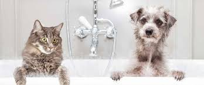

Baño Regular
El baño regular de las mascotas es esencial para mantener su piel y pelaje en buen estado. Se recomienda usar productos específicos para mascotas que no dañen su pH natural.

El baño regular de las mascotas es esencial para mantener su piel y pelaje en buen estado. Se recomienda usar productos específicos para mascotas que no dañen su pH natural.
La higiene dental en las mascotas ayuda a prevenir la formación de sarro y enfermedades periodontales. Los cepillos y pastas dentales especiales para mascotas son una excelente opción.
La limpieza de los oídos es fundamental para evitar infecciones. Es recomendable revisar las orejas de tu mascota con frecuencia y usar productos especiales si es necesario.